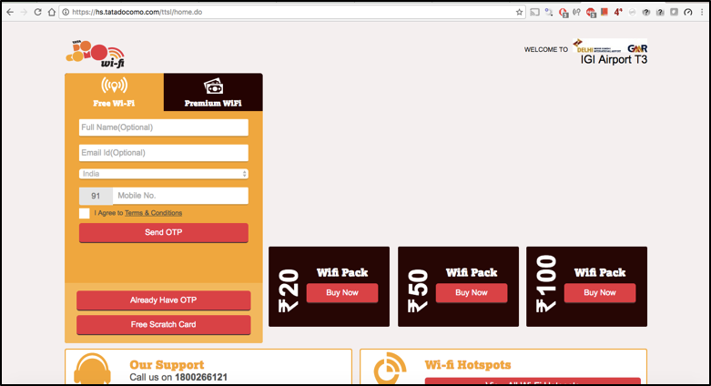
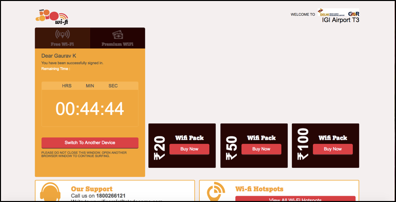
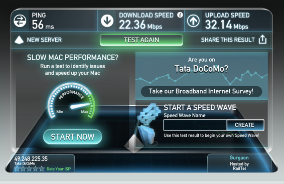
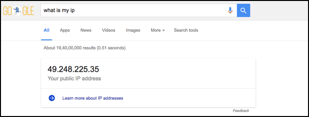
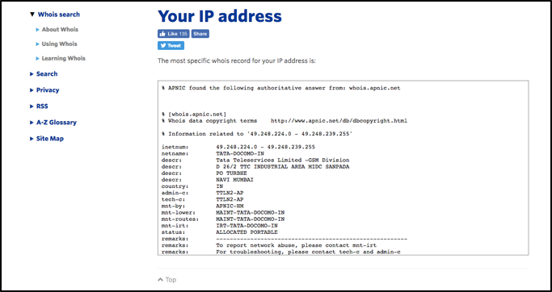

The access points installed at T3, IGI Airport, New Delhi are of Cisco make, Internal access points with internal antennas. This is depicted in the below images –

Cisco access points can be installed in two modes –:-
- Lightweight installation.
In this mode, access points make a secure tunnel with the wireless controller and pass all the user traffic to the controller. Based on configuration, controller take appropriate actions and process the traffic. Advisable for large/enterprise setup.
- Autonomous installation –
In this mode, access points play the role of controller also and process the traffic as per policy. Ideal for small setup.
I roam around at various corner of the floor after connecting to wireless and I didn’t face any connection drop (or re-authentication issues). This is a roaming functionality which usually possible only in controller based model. This cause me believe that wireless setup installed at T3, IGI Airport, New Delhi is controller based setup.
SSID and other information’s –
SSID announced at T3 was ‘Tata Docomo Wi-Fi’ and it was an open ssid (service set identifier). So, from the name itself it was clearly visible that Wi-Fi service is provided by Tata Docomo (why will anyone else do the advertisement for Tata Docomo J). After connecting to the SSID, all the user traffic is diverted to the captive portal which asked for OTP based authentication and only after successful authentication, user is allowed to access the network (Internet).

From the above screen shots, we are able to find out some useful information like network segment, signal strength, interference and about 802.11 protocol used.
- Network- The IP segment used for wireless was 100.77.32.0/20 which belongs to 100.64.0.0/10 super net which is reserved as ‘Shared Address Space’ by IANA and is described in RFC 6598.
- 802.11 information- I was connected to wireless network over 802.11n standard in 2.4 GHz band, over channel number 6 and channel width was 20MHz (.11n standard works on both the band i.e., 2.4GHz and 5GHz). Connection speed was 145Mbps (which is fairly good) and MCS Index was 15.
- Signal strength- RSSI value of the connection was -57dBm, which is fairly good as per standards and noise was -96dBM, which is negligible. So, we can figure out that interference was very low, or you can say, it was nearly negligible (and this was expected because wireless network was confined in the airport, which is under the reach of limited persons only).
Authentication
SSID announced for guest access was of web-auth type; means it was open (anyone can come & connect) and all the user traffic was diverted to the captive portal, which asked for user authentication through OTP before allowing the user to access the network.
Website which asked for user information was https://hs.tatadocomo.com/ttsl/home.do, hosted over public ip address (i.e., 14.194.199.10) but only accessible when you are connected through their Wi-Fi. Website was over SSL/TLS which is a best practice in these cases.
After successful authentication, user is allowed to access the Wi-Fi for 45 mins without any charges. Above image depicts that this (in my case when I took the screen shot, 44 Min 44 Sec are left) and after that you have to purchase the coupon to access the wireless and same is available on the captive portal in the denominations of 20, 50 or 100. The white space visible over voucher images is the space for Ads which was blocked by Ad Block extension.
Speed Test and Uplink Information
In 802.11 information part, I mentioned that I was connected over 145Mbps, which is a theoretical connection speed based on Tx power, Rx power, RSSI values, Noise, Modulation and certain other factors. The actual speed which I measured through speed test utility is shown below –
Speed test results show a download speed of 22 Mbps and upload speed of 32 Mbps which is much better than the average broadband speed in India.
If I talk about the up-link which is used for upstreaming the Wi-Fi at T3, I was going out through Tata Docomo’s network and my public IP was 49.248.225.35
This shows that Tata Docomo provides end-to-end wireless network at T3 which includes wireless access points, controller and up-link for internet reachability.
